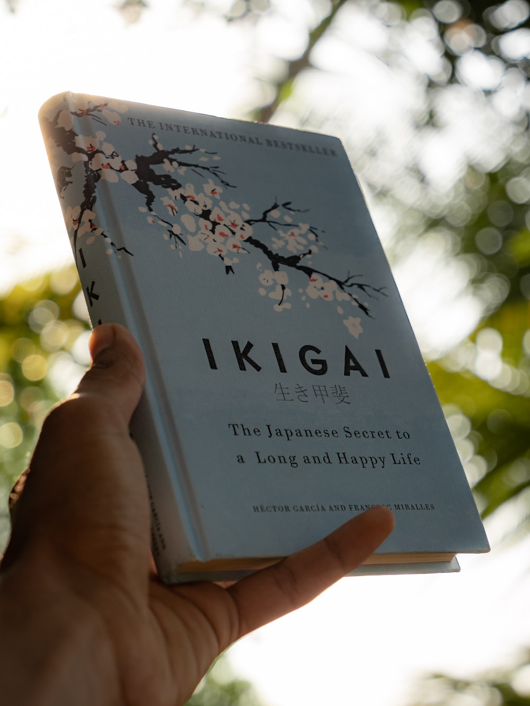

Ikigai
Ikigai: The Japanese Secret to a Long and Happy Life
About the Book
"The Japanese word ikigai which has recently gained attention worldwide and enjoys widespread use, refers to a passion that gives value and joy to life."
The Ikigai book introduces you to various topics related to the art of living, such as the blue zones, longevity, logotherapy, flow, yoga, tai chi, and resilience. It defines what Ikigai is and its rules. The book says that living a long and full life is under your control to an extent.
About the Author
Héctor García is a citizen of Japan, where he has lived for over a decade, and of Spain, where he was born. He is the author of several books about Japanese culture, including two worldwide bestsellers, A Geek in Japan and Ikigai. A former software engineer, he worked at CERN in Switzerland before moving to Japan
Francesc Miralles M6---iralles, son of a dressmaker and an erudite office clerk, was born on 27 August 1968 in Barcelona, Spain . Having studied for eight years at a Catholic school in La Ribera, next to the Palau de la Música, he decided to continue his education by attending secondary school at the now defunct Almi Academy and at Montserrat High School.
Reviews
Review Title 1
"I found the book to be a very enjoyable and thought-provoking read. It made me reflect on my own passions and skills, and how I can align them with the needs of the world and my own financial needs. The authors also offer practical advice on how to find and ultivate your ikigai, including tips on how to set goals and create a sense of purpose."
-Shashi Dev ShahReview Title 2
"Just completed the book. Had a great experience thought it would be short stories but it took me to a whole new different level. And I had great experience knowing about the Japanese people and their lifestyle. Soon I ll try to apply so that I could also feel the changes."
-Debamitra Hajra